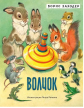

Волчок

Замечательная сказка в стихах известного детского писателя Бориса Заходера про злого Серого волка, который превратился в веселую игрушку Волчок. Книга проиллюстрирована художником Петром Петровичем Репкиным.

Замечательная сказка в стихах известного детского писателя Бориса Заходера про злого Серого волка, который превратился в веселую игрушку Волчок. Книга проиллюстрирована художником Петром Петровичем Репкиным.